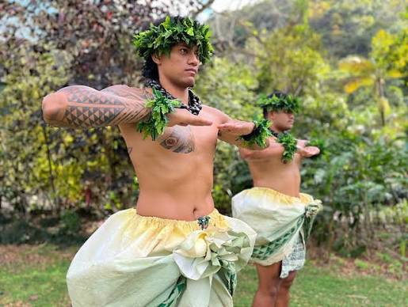

Hawaii

Luau
Description
A lūʻau is a traditional Hawaiian feast that includes delicious food, live music, and cultural performances from Hawaiʻi and other Polynesian islands. The first lūʻau was held in 1819 after old rules that separated men and women during meals were removed. Today, lūʻau celebrates Hawaiʻi’s diverse culture, so they often include foods and entertainment from many different traditions. Popular Hawaiian dishes served at a lūʻau include poi, kālua pig, laulau, haupia, and poke. A lūʻau is one of the best ways for visitors to experience Hawaiian culture, history, and hospitality.
More Activities
Order Activity Need to do/fill something beforehand? 1 Coconut Husking ❌ Usually no. It is normally a hands-on activity provided by the luau. Follow the staff's safety instructions. 2 Lei Making ❌ Usually no reservation. Materials are normally provided by the luau. 3 Ukulele Lesson ❌ Usually no reservation if included with the luau. An instructor normally provides the ukulele and teaches the basics. 4 Spear Throwing ⚠️ Usually no form if it is part of the luau, but follow the instructor's safety rules. Some venues may have age or participation restrictions. 5 Limbo Competition ❌ Usually no reservation. Just join if you want to participate. 6 Hula Hoop ❌ Usually no reservation. Equipment is normally provided. 7 Imu Ceremony ❌ No reservation normally needed if included in your luau package. You simply watch the ceremony and follow the staff's instructions.| 2 | **Lei Making** | ❌ Usually no reservation. Materials are normally provided by the luau. | | 3 | **Ukulele Lesson** | ❌ Usually no reservation if included with the luau. An instructor normally provides the ukulele and teaches the basics. | | 4 | **Spear Throwing** | ⚠️ Usually no form if it is part of the luau, but **follow the instructor's safety rules**. Some venues may have age or participation restrictions. | | 5 | **Limbo Competition** | ❌ Usually no reservation. Just join if you want to participate. | | 6 | **Hula Hoop** | ❌ Usually no reservation. Equipment is normally provided. | | 7 | **Imu Ceremony** | ❌ No reservation normally needed if included in your luau package. You simply watch the ceremony and follow the staff's instructions. |
Recommended Order
Coconut Husking → Lei Making → Ukulele Lesson → Spear Throwing → Limbo Competition → Hula Hoop → Imu Ceremony
Best Transportation
The best way to travel between cities in China is via the extensive high-speed rail (bullet train) network, which is fast, punctual, and comfortable. For getting around within major cities, the metro (subway) systems
Best Time to Go
The best time to visit a luau in Hawaii is during the dry season (May through September), when warm evening weather and clear sunset skies are most reliable. Arriving during late afternoon—around 5:00 PM—ensures you catch pre-show crafts, lei greetings, and traditional cooking demonstrations.
Worst Time to Go
There is no bad weather time to visit Hawaii since temperatures stay warm year-round. However, the worst time to go for a luau in terms of massive crowds and peak prices is mid-December through early January and spring break (February to March). During these peak periods, large crowds diminish the personal, relaxed feel of a luau, and travel costs spike significantly.
Rules
Attending a Hawaiian luau requires respecting local customs and traditions. Key rules include dressing in comfortable aloha attire, treating the land and performers with respect, avoiding outside food, and appreciating traditional foods like poi properly without altering them with sugar